UE4新建人物和地图模式
在 UE4 中，每一个世界（World）有多个 Level（关卡），而每个关卡又可以设定自己的 GameMode（游戏模式），从而控制游戏的玩法。
2) 点击 "C++类" ，选中"GameProject" 文件夹，在右边的“资源面板”右键点击 "新建C++类"。
3) 选中“GameModeBase”（游戏模式），点击“下一步”。
4) 更改我们的类名为：PlayingGameModeBase，说明是游戏中的 GameMode，选择右边的“公有”，这个选项会把
5) 打开 VS 编辑器，可以看到我们刚刚创建的
2) 更改类名为 PlayingCharacter，同样放在“/Playing”文件夹下。
3) 创建成功后 VS 编辑器如下：
2) 更改类名为 PlayingController，同样放在“/Playing”文件夹下。
3) 创建完成后 VS 编辑器如下：
这样我们就创建了三个类，但是也只是创建出来了而已，下一节将会配置这三个类到游戏中。
新建 GameMode
1) 打开 UE4 编辑器，我们点击左下角的“显示/隐藏资源面板”。
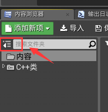
2) 点击 "C++类" ，选中"GameProject" 文件夹，在右边的“资源面板”右键点击 "新建C++类"。
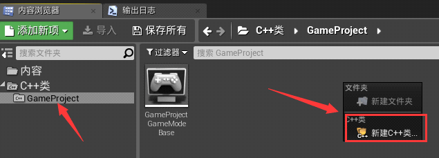
3) 选中“GameModeBase”（游戏模式），点击“下一步”。
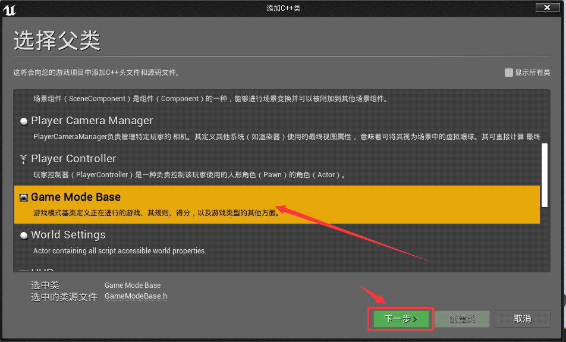
4) 更改我们的类名为：PlayingGameModeBase，说明是游戏中的 GameMode，选择右边的“公有”，这个选项会把
.h和.cpp文件分开，方便我们查看代码。更改头文件的存放路径，建议路径和我的保持一致，最后点击“创建类”。
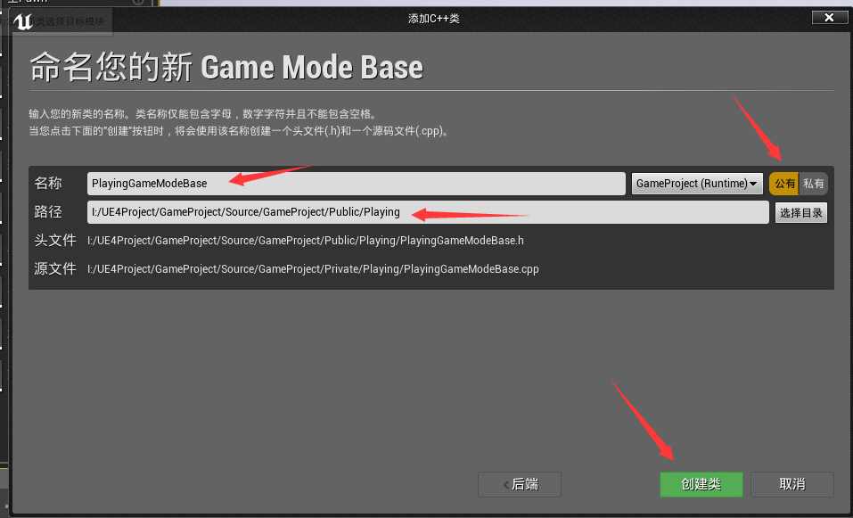
5) 打开 VS 编辑器，可以看到我们刚刚创建的
.h和.cpp文件。
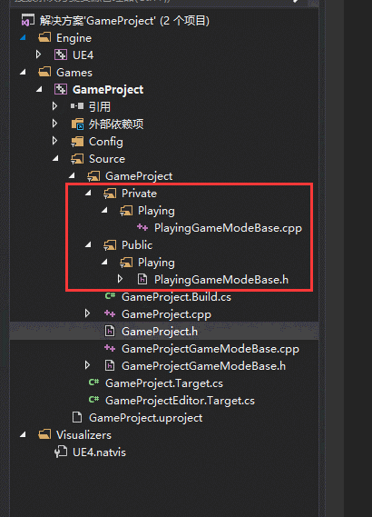
新建角色
1) 我们回到 UE4 编辑器，使用同样的方法去创建我们的 Character 类，Character 类是我们的角色类，也是我们玩家控制的角色，它里面自带了角色移动组件。
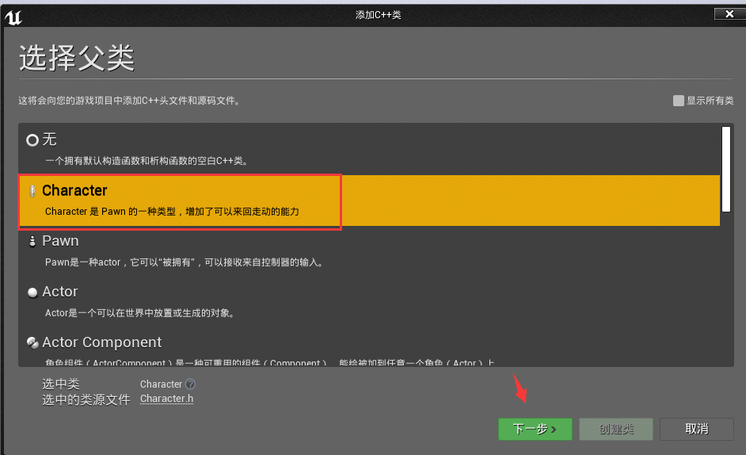
2) 更改类名为 PlayingCharacter，同样放在“/Playing”文件夹下。
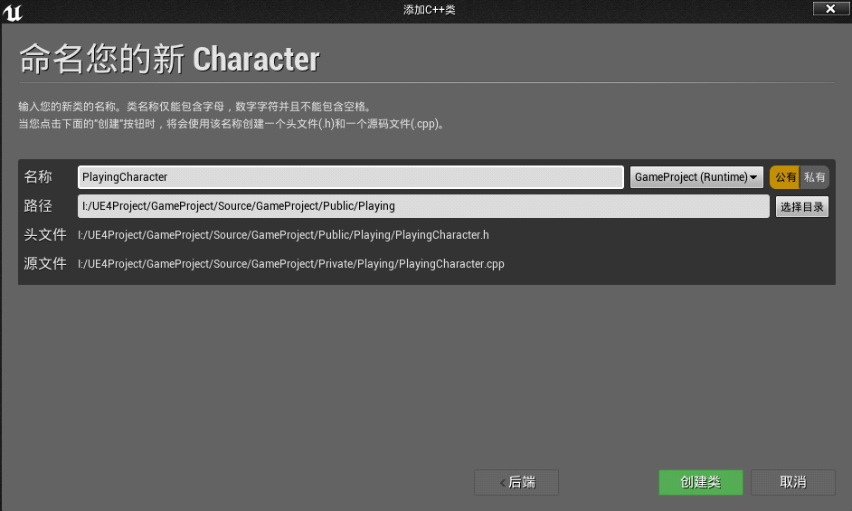
3) 创建成功后 VS 编辑器如下：
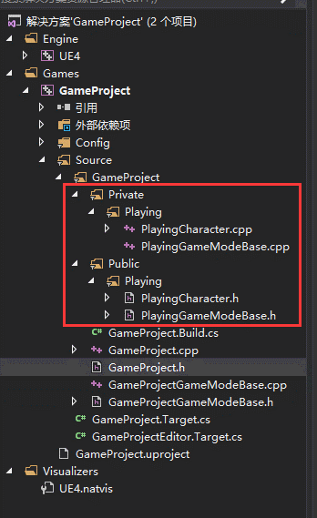
新建控制器（PlayerController）
1) PlayerController 代表着我们玩家，我们玩家通过这个控制器去控制我们的角色（Character），它里面有自带的按键输入，是否显示鼠标，是否开启点击事件之类的功能。
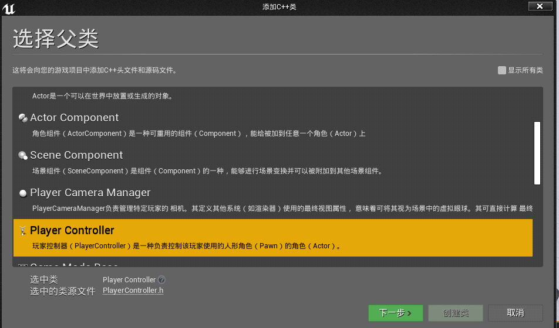
2) 更改类名为 PlayingController，同样放在“/Playing”文件夹下。
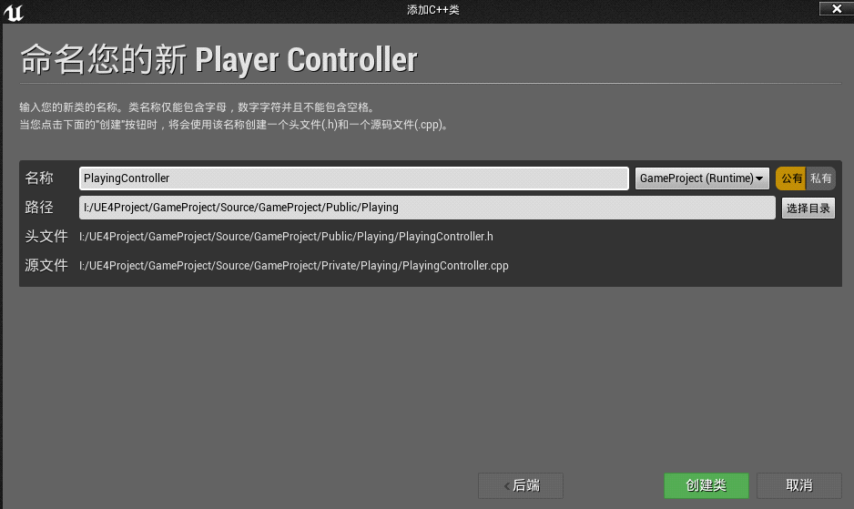
3) 创建完成后 VS 编辑器如下：
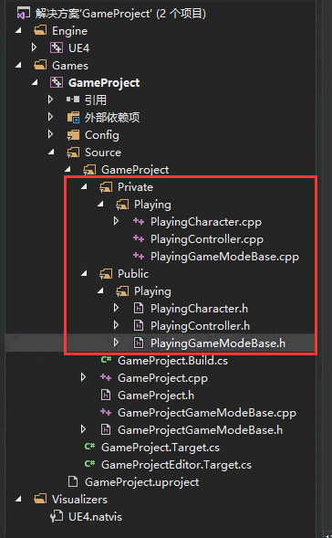
这样我们就创建了三个类，但是也只是创建出来了而已，下一节将会配置这三个类到游戏中。
关注公众号「站长严长生」，在手机上阅读所有教程，随时随地都能学习。内含一款搜索神器，免费下载全网书籍和视频。

微信扫码关注公众号